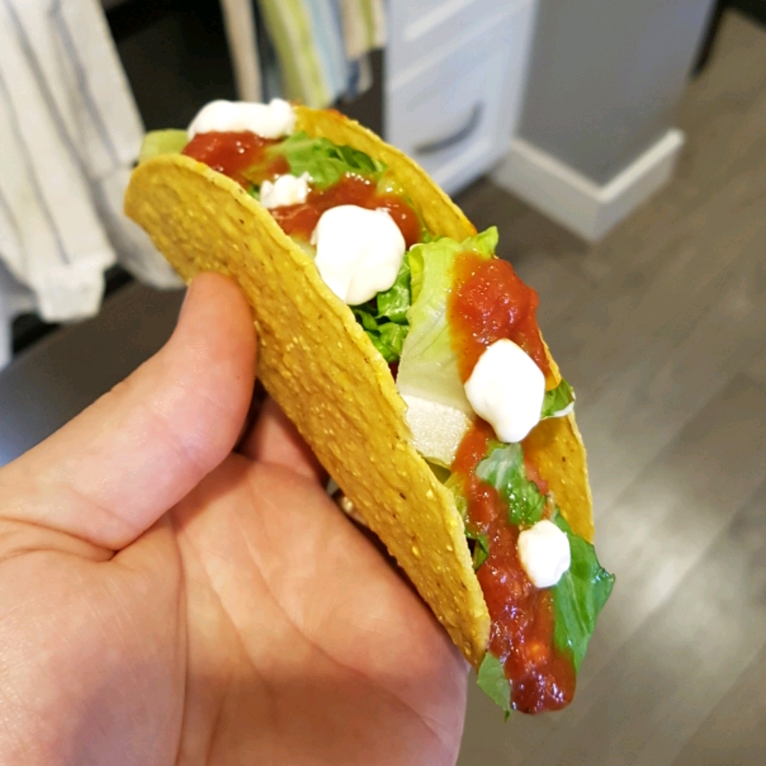

Easy Tacos by Campbell Kitchen

Description
Serve these tasty tacos that get fabulous flavor from Mexican-style tomato soup. Your family can have this crunchy, and delicious dish on the table in just 20 minutes.
Ingredients
- 2 pounds ground beef
- 1 (14.5 ounce) carton Campbell's® Mexican Style Tomato Soup
- 12 taco shells, warmed
- ¾ cup shredded lettuce
- ⅓ cup shredded Cheddar cheese
- ¾ cup diced tomato
Steps
- Cook the beef in a 12-inch skillet over medium-high heat until the beef is well browned, stirring often to separate meat. Pour off any fat. Season with salt and black pepper.
- Stir the soup in the skillet and heat to a boil. Reduce the heat to low. Cook for 5 minutes or until the soup is reduced, stirring often.
- Divide the beef mixture among the taco shells. Top with the lettuce, tomato and cheese.
Source for Recipe: Easy Tacos